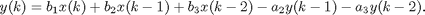
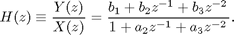
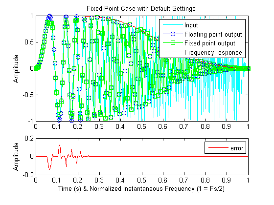
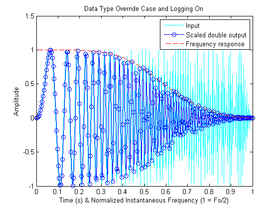
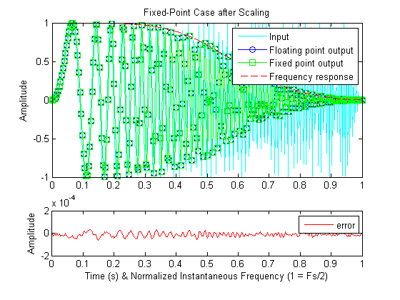
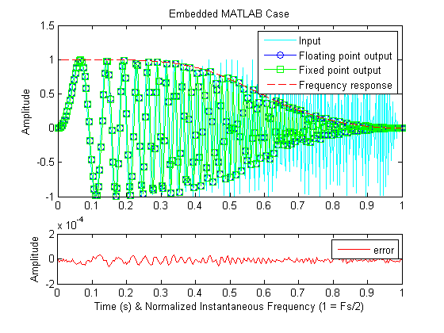
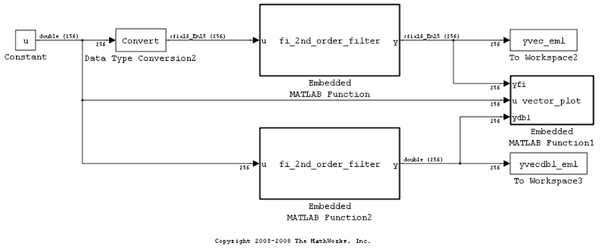
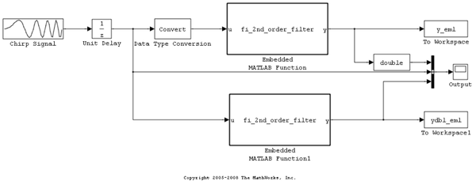

Fixed-Point Data Type Override, Min/Max Logging, and Scaling
This is a demonstration of data type override, min/max logging, and scaling of fixed-point objects in MATLAB®. After determining the scaling of the fixed-point algorithm, we use that information in Embedded MATLAB® to automatically generate fixed-point C code from our MATLAB algorithm.
Contents
- Development Process
- The Textbook Algorithm
- Implement Textbook Algorithm in MATLAB
- Notes on the MATLAB Code
- Verify with Built-in Floating-Point in MATLAB
- Compute the Magnitude of the Frequency Response of the Filter
- Plot the Results
- Convert to Fixed-Point Data Types in MATLAB and Run with Default Settings
- Override the fi Object with 'ScaledDouble' Data Type to Log Min and Max Values
- Accessing Logged Values
- Use Logged Min and Max Values to Set the Fixed-Point Scaling
- Set up the fimath Object
- Validate the Fixed-Point Solution
- Use Embedded MATLAB™ block in Simulink® to convert MATLAB to C
- Open the Embedded MATLAB Model
- Open the Embedded MATLAB Function Block
- Sample-Based Model
- Use Embedded MATLAB features emlmex and emlc
- Copy Required File
- Compile the MATLAB-File into a MEX File
- Compare the Speed of the Filter Using the MEX File and the Original MATLAB-File
- Generate C-Code Using Real-Time Workshop™
- Inspect the Generated Code
- Clean up Temporary Files and Folders
Development Process
A common problem in fixed-point development is to determine the correct scaling and data types for a fixed-point algorithm. This demo illustrates the method of running test signals through an algorithm, logging the minimum and maximum values of all variables, and setting their scaling based on the logged values.
We will follow these steps.
1. Implement the textbook algorithm in MATLAB.
2. Verify with built-in floating-point data types in MATLAB.
3. Convert to fixed-point data types in MATLAB and run with default settings.
4. Set the fipref DataTypeOverride property to ScaledDoubles to log the full numerical range of values.
5. Use the logged minimum and maximum values to set the fixed-point scaling.
6. Validate the fixed-point solution.
7. Convert MATLAB to C using Embedded MATLAB.
The Textbook Algorithm
The algorithm that we will use for our example is a second-order difference equation with input x, output y, and constant coefficients

The transfer function of this equation is

Because the b coefficients appear in the numerator of the transfer function, they are commonly called numerator coefficients. Similarly, the a coefficients are commonly called denominator coefficients.
Difference equations are used in digital controllers and filters.
Implement Textbook Algorithm in MATLAB
We have implemented this algorithm in the following MATLAB code.
type fi_2nd_order_filter
function [y, acc] = fi_2nd_order_filter(b,a,x,Ty,Tacc,resetStates)
%FI_2ND_ORDER_FILTER Fixed-point second-order filter.
% [Y, ACC] = FI_2ND_ORDER_FILTER(B,A,X,Ty,Tacc,ResetStates)
% filters data X with second-order filter coefficients B and A.
% If X is fixed point, then this function runs in fixed point,
% using Ty as the NUMERICTYPE of output Y, and Tacc as the
% NUMERICTYPE of the accumulator ACC. If ResetStates is missing,
% or TRUE, then the states are reset.
%
% Note: A single, global fimath is assumed to apply to all
% operations inside this function. You may use globalfimath to set
% up this fimath.
%
% See FI_DATATYPE_OVERRIDE_DEMO for example of use.
% Copyright 2005-2009 The MathWorks, Inc.
% $Revision: 1.1.8.3 $ $Date: 2009/12/28 04:11:44 $
% Persistent state variables
persistent zx zy
% Initialize the output, accumulator, and states
if nargin<4, Ty=[]; end
if nargin<5, Tacc=[]; end
if nargin<6, resetStates = true; end
if isfi(x)
% The input is fixed point. Compute in fixed point
if isempty(Ty), Ty = numerictype(x); end
if isempty(Tacc), Tacc = numerictype(x); end
y = fi(zeros(size(x)), Ty);
acc = fi(0, Tacc);
if isempty(zx) || isempty(zy) || resetStates
% Initialize states
zx = fi(zeros(2,1), numerictype(x));
zy = fi(zeros(2,1), numerictype(y));
end
else
% The input is not fixed point. Compute in built-in double-precision
% floating-point.
b = double(b);
a = double(a);
x = double(x);
y = zeros(size(x));
acc = 0;
if isempty(zx) || isempty(zy) || resetStates
% Initialize states
zx = zeros(2,1);
zy = zeros(2,1);
end
end
% Filter loop:
% y(k) = b(1)*x(k) + b(2)*x(k-1) + b(3)*x(k-2)
% - a(2)*y(k-1) - a(3)*y(k-2)
for k = 1:length(x)
acc(1) = b(1)*x(k);
acc(1) = acc + b(2)*zx(1);
acc(1) = acc + b(3)*zx(2);
acc(1) = acc - a(2)*zy(1);
acc(1) = acc - a(3)*zy(2);
y(k) = acc;
% State update
zx(2) = zx(1); zx(1) = x(k);
zy(2) = zy(1); zy(1) = y(k);
end
Notes on the MATLAB Code
- The optimal fixed-point data type of the output and the accumulator cannot always be inferred from the inputs, so we input numerictype objects Ty and Tacc to specify the data type of the output y and the accumulator acc, respectively.
- We check to see if the input is a fi object, and construct the output and accumulator accordingly, so that built-in data types can use the same code.
- The filter has state variables zx and zy to process past inputs and outputs, initialized to zero.
- The sum is accumulated in variable acc so we can log minimum and maximum values over the course of the sum. As we will see in this example, an intermediate sum can overflow even when the output does not.
Verify with Built-in Floating-Point in MATLAB
To validate the algorithm, we first run it with built-in double variables for coefficients and input. For this example, we have chosen coefficients that define a low-pass filter and a linear chirp input to illustrate the attenuation of high frequencies.
num = [0.29290771484375 0.585784912109375 0.292907714843750]; den = [1.0 0.0 0.171600341796875]; Fs = 256; % Sampling frequency Ts = 1/Fs; % Sample time t = 0:Ts:1-Ts; % Time vector from 0 to 1 second f1 = Fs/2; % Target frequency of chirp set to Nyquist gain = (1-2^-15); % Scale the input to be in the range [-1, +1) u = gain * sin(pi*f1*t.^2); % Linear chirp from 0 to Fs/2 Hz in 1 second.
Run the filter with built-in double data types.
y0 = fi_2nd_order_filter(num, den, u);
Compute the Magnitude of the Frequency Response of the Filter
n = length(u); H = abs(fft(num,2*n)./fft(den,2*n)); H = H(1:n); f = linspace(0,1,n);
Plot the Results
The instantaneous frequency of the chirp signal goes from 0 to Fs/2 Hz, and the time goes from 0 to 1 second. Hence, we can plot the frequency response against the normalized frequency (0 to 1) on the same axis as the time response (0 to 1 second).
clf plot(f,u,'c-',f,y0,'bo-',f,H,'r--') xlabel('Time (s) & Normalized Instantaneous Frequency (1 = Fs/2)') ylabel('Amplitude') legend('Input','Floating-point output','Frequency response') title('Double-Precision Floating-Point Case')
Convert to Fixed-Point Data Types in MATLAB and Run with Default Settings
Our initial try is to define the variables as fixed-point fi objects using default values. We turn on overflow warnings, turn off underflow warnings, and turn on logging.
warning on fi:overflow warning off fi:underflow warning off backtrace fp = fipref; currentLoggingMode = fp.LoggingMode; % store away current LoggingMode setting; % restore this at the end of the demo. fipref('LoggingMode','on'); b = fi(num) a = fi(den) x = fi(u); [y,acc] = fi_2nd_order_filter(b,a,x); % Fixed-point, default settings
b =
Columns 1 through 2
0.29290771484375 0.585784912109375
Column 3
0.29290771484375
DataTypeMode: Fixed-point: binary point scaling
Signedness: Signed
WordLength: 16
FractionLength: 15
a =
Columns 1 through 2
1 0
Column 3
0.171630859375
DataTypeMode: Fixed-point: binary point scaling
Signedness: Signed
WordLength: 16
FractionLength: 14
Warning: 1 overflow occurred in the fi assignment operation.
Warning: 1 overflow occurred in the fi assignment operation.
Warning: 1 overflow occurred in the fi assignment operation.
Warning: 1 overflow occurred in the fi assignment operation.
Warning: 1 overflow occurred in the fi assignment operation.
Warning: 1 overflow occurred in the fi assignment operation.
Warning: 1 overflow occurred in the fi assignment operation.
Warning: 1 overflow occurred in the fi assignment operation.
Warning: 1 overflow occurred in the fi assignment operation.
Warning: 1 overflow occurred in the fi assignment operation.
Warning: 1 overflow occurred in the fi assignment operation.
Warning: 1 overflow occurred in the fi assignment operation.
Warning: 1 overflow occurred in the fi assignment operation.
Warning: 1 overflow occurred in the fi assignment operation.
Warning: 1 overflow occurred in the fi assignment operation.
Warning: 1 overflow occurred in the fi assignment operation.
Warning: 1 overflow occurred in the fi assignment operation.
Note the overflows in the fi assignment operation. If you are interested in also seeing the line number in the code where the overflow occurred, do
warning on backtrace
You can see the effect of the overflows in the difference between the floating-point and fixed-point plots.
fi_datatype_override_demo_plot(b,a,x,y,y0,'Fixed-Point Case with Default Settings')
 Override the fi Object with 'ScaledDouble' Data Type to Log Min and Max Values
The saturation of the accumulator prevented the full range of possible values from being attained. We change the data type of the fi object to be ScaledDouble to allow the full range of values to be displayed. One of the differences between built-in MATLAB double-precision variables and fi objects set to ScaledDouble data type is that the fi object logs the minimum and maximum value that has been assigned to the variable. Another benefit to using the ScaledDouble data type over the double data type is that it retains its fixed-point parameters so it can detect overflow and underflow.
currentDTOSetting = fp.DataTypeOverride; % store away current DataTypeOverride % setting; restore this at the end % of the demo. fipref('DataTypeOverride','ScaledDoubles'); b = fi(num) a = fi(den) x = fi(u); [y_sd_fi,acc_sd_fi] = fi_2nd_order_filter(b,a,x); % fi ScaledDouble override
b =
Columns 1 through 2
0.29290771484375 0.585784912109375
Column 3
0.29290771484375
DataTypeMode: Scaled double: binary point scaling
Signedness: Signed
WordLength: 16
FractionLength: 15
a =
Columns 1 through 2
1 0
Column 3
0.171600341796875
DataTypeMode: Scaled double: binary point scaling
Signedness: Signed
WordLength: 16
FractionLength: 14
Warning: 1 overflow occurred in the fi assignment operation.
Warning: 1 overflow occurred in the fi assignment operation.
Warning: 1 overflow occurred in the fi assignment operation.
Warning: 1 overflow occurred in the fi assignment operation.
Warning: 1 overflow occurred in the fi assignment operation.
Warning: 1 overflow occurred in the fi assignment operation.
Warning: 1 overflow occurred in the fi assignment operation.
Warning: 1 overflow occurred in the fi assignment operation.
Warning: 1 overflow occurred in the fi assignment operation.
Warning: 1 overflow occurred in the fi assignment operation.
Warning: 1 overflow occurred in the fi assignment operation.
Warning: 1 overflow occurred in the fi assignment operation.
Warning: 1 overflow occurred in the fi assignment operation.
Warning: 1 overflow occurred in the fi assignment operation.
Warning: 1 overflow occurred in the fi assignment operation.
Warning: 1 overflow occurred in the fi assignment operation.
Warning: 1 overflow occurred in the fi assignment operation.
Warning: 1 overflow occurred in the fi assignment operation.
Warning: 1 overflow occurred in the fi assignment operation.
Warning: 1 overflow occurred in the fi assignment operation.
Warning: 1 overflow occurred in the fi assignment operation.
Warning: 1 overflow occurred in the fi assignment operation.
Warning: 1 overflow occurred in the fi assignment operation.
Warning: 1 overflow occurred in the fi assignment operation.
Warning: 1 overflow occurred in the fi assignment operation.
Warning: 1 overflow occurred in the fi assignment operation.
Warning: 1 overflow occurred in the fi assignment operation.
Warning: 1 overflow occurred in the fi assignment operation.
Warning: 1 overflow occurred in the fi assignment operation.
Warning: 1 overflow occurred in the fi assignment operation.
Warning: 1 overflow occurred in the fi assignment operation.
Warning: 1 overflow occurred in the fi assignment operation.
Warning: 1 overflow occurred in the fi assignment operation.
Warning: 1 overflow occurred in the fi assignment operation.
Note that there were more overflows detected with the scaled double data type than with the fixed-point data type because intermediate values do not get quantized with the scaled double data type and so you can see the full range that a variable would have attained.
fi_datatype_override_demo_plot(b,a,x,y_sd_fi,... 'Data Type Override Case and Logging On')
Accessing Logged Values
When the LoggingMode property of the fipref object is set to 'on', you can use the following functions to access the logged information on a fi object:
- maxlog(x) returns the largest real-world value assigned to fi object x since logging was turned on
- minlog(x) returns the smallest real-world value assigned to fi object x since logging was turned on
- noverflows(x) returns the number of overflows of fi object x since logging was turned on
- nunderflows(x) returns the number of underflows of fi object x since logging was turned on
- resetlog(x) clears the log for fi object x
In addition to the logging functions, you can use the following functions to get the range of the data type of a fi:
- range(x) returns the numerical range of fi object x
- lowerbound(x) returns the lower bound of the range of fi object x
- upperbound(x) returns the upper bound of the range of fi object x
We have encapsulated the display of the logged data in the logreport function. Note that the partial sums overflowed the accumulator acc, even though the output y did not overflow.
logreport(b,a,x,y_sd_fi,acc_sd_fi)
minlog maxlog lowerbound upperbound noverflows nunderflows
b 0.2929077 0.5857849 -1 0.9999695 0 0
a 0 1 -2 1.999939 0 0
x -0.9999507 0.9999695 -1 0.9999695 0 7
y_sd_fi -0.9944903 0.9974259 -1 0.9999695 0 0
acc_sd_fi -1.131503 1.160298 -1 0.9999695 34 9
Use Logged Min and Max Values to Set the Fixed-Point Scaling
Given the range of values from minlog and maxlog of our variables, we can now set optimal scaling to prevent overflow for the given input.
Note that this scaling depends on the input that was used in the test. If the input changes, then the optimal scaling may change. Great care should be taken to design inputs that will exercise the full range of values. Common choices for input values are combinations of
- Random noise scaled to the full numeric range of the fixed-point input data type
- Step signals [0 0 ... 0 1 1 ... 1]
- Impulse signals [1 0 0 ... 0]
- Chirp signals from 0 to Fs/2 Hz
We compute the best numeric type from the logs of a variable via the following function.
type fi_best_numeric_type_from_logs
function T = fi_best_numeric_type_from_logs(x, is_signed, word_length) %FI_BEST_NUMERIC_TYPE_FROM_LOGS Best fixed-point numeric type from min/max logs. % T = FI_BEST_NUMERIC_TYPE_FROM_LOGS(X, IS_SIGNED, WORD_LENGTH) % returns the best-precision fixed-point NUMERICTYPE object T based % on the min/max logs of FI object X, and whether the target % fixed-point data type IS_SIGNED (true/false) and the target % fixed-point WORD_LENGTH. % % See FI_DATATYPE_OVERRIDE_DEMO for an example of use. % Copyright 2005 The MathWorks, Inc. % $Revision: 1.1.8.1 $ % Compute the range of the min/max logs. A = max(abs(double(minlog(x))),abs(double(maxlog(x)))); % Compute the integer part such that the range will not overflow. integer_part = ceil(log2(A)); % Compute the fraction length. fraction_length = word_length - integer_part - double(logical(is_signed)); % Construct the fixed-point numeric type object. T = numerictype(is_signed, word_length, fraction_length);
We use 16-bit signed data, a 40-bit accumulator, and compute the best-precision scaling from logs generated by simulation with ScaledDoubles. You can experiment by changing these values. For example, also try 8-bit signed data and a 32-bit accumulator (Wdata = 8; Wacc = 32;)
Wdata = 16; % Word length of the data Wacc = 40; % Word length of the accumulator is_signed = true; Ty = fi_best_numeric_type_from_logs(y_sd_fi, is_signed, Wdata) Tacc = fi_best_numeric_type_from_logs(acc_sd_fi, is_signed, Wacc)
Ty =
DataTypeMode: Fixed-point: binary point scaling
Signedness: Signed
WordLength: 16
FractionLength: 15
Tacc =
DataTypeMode: Fixed-point: binary point scaling
Signedness: Signed
WordLength: 40
FractionLength: 38
Set up the fimath Object
The fimath object encapsulates the settings for fixed-point math operations. We let the Fixed-Point Toolbox™ figure out the product types by setting ProductMode to FullPrecision, knowing that the product will always be 32 bits long (both operands are 16 bit).
F = fimath('RoundMode', 'floor', ... 'OverflowMode', 'wrap', ... 'ProductMode', 'FullPrecision', ... 'SumMode', 'SpecifyPrecision', ... 'SumWordLength', Tacc.WordLength, ... 'SumFractionLength', Tacc.FractionLength) % We will now make F the default |fimath| for all fixed-point operations. All % FIs created henceforth will have this |fimath|. currentGlobalFimath = fimath; % store away current global fimath; % restore this at the end of the demo. globalfimath(F);
F =
RoundMode: floor
OverflowMode: wrap
ProductMode: FullPrecision
MaxProductWordLength: 128
SumMode: SpecifyPrecision
SumWordLength: 40
SumFractionLength: 38
CastBeforeSum: true
Validate the Fixed-Point Solution
Run the filter again with fixed-point data types and the settings that we have computed.
fipref('DataTypeOverride','ForceOff'); % Set up b, a, and x with best-precision fraction length b = fi(num, is_signed, Wdata); a = fi(den, is_signed, Wdata); x = fi(u, is_signed, Wdata); [y,acc] = fi_2nd_order_filter(b,a,x,Ty,Tacc); % Optimal fixed-point settings fi_datatype_override_demo_plot(b,a,x,y,y0,... 'Fixed-Point Case after Scaling')
logreport(b,a,x,y,acc)
minlog maxlog lowerbound upperbound noverflows nunderflows
b 0.2929077 0.5857849 -1 0.9999695 0 0
a 0 1 -2 1.999939 0 0
x -0.999939 0.9999695 -1 0.9999695 0 7
y -0.9944763 0.997406 -1 0.9999695 0 0
acc -1.131492 1.160302 -2 2 0 0
Note that there are no longer any overflows.
Use Embedded MATLAB™ block in Simulink® to convert MATLAB to C
If you have Simulink® Fixed Point™ and Real-Time Workshop®, you can put your fixed-point MATLAB-code into an Embedded MATLAB Function block, to generate C-code from MATLAB-code.
We added the fixed-point attributes that we computed above to the Embedded MATLAB block in this model, and re-used the identical algorithm in MATLAB. Embedded MATLAB is a proper subset of MATLAB.
Note that as of R2008b, the Embedded MATLAB subset supports word-lengths of up to 128 bits. Thus an accumulator word-length of 40 bits is easily supported by the Embedded MATLAB Function block.
if license('test','Fixed-Point_Blocks')&&license('test','Real-Time_Workshop') bdclose all sim('eml_2nd_order_filter_vectorized') end
Open the Embedded MATLAB Model
if license('test','Fixed-Point_Blocks')&&license('test','Real-Time_Workshop') eml_2nd_order_filter_vectorized end
Open the Embedded MATLAB Function Block
Double-click on the Embedded MATLAB block to see the MATLAB code.
Sample-Based Model
Using the identical Embedded MATLAB code we can also run in sample-based mode, in which the function processes one input sample and produces one output sample at each time step. Here is an example of the block in sample-based mode.
if license('test','Fixed-Point_Blocks')&&license('test','Real-Time_Workshop') bdclose all eml_2nd_order_filter end
Use Embedded MATLAB features emlmex and emlc
Copy Required File
There is a MATLAB-file that is needed to run this demonstration. Copy it to a temporary directory. This step requires write-permission to the system's temporary directory. Switch off LoggingMode for now as emlmex does not support it.
emlmexdir = [tempdir filesep 'emlmexdir']; emlcdir = [tempdir filesep 'emlcdir']; if ~exist(emlmexdir,'dir') mkdir(emlmexdir); end if ~exist(emlcdir,'dir') mkdir(emlcdir); end emlmexsrc = ... fullfile(matlabroot,'toolbox','fixedpoint','fidemos','fieml_2nd_order_filter.m'); copyfile(emlmexsrc,emlmexdir,'f'); copyfile(emlmexsrc,emlcdir,'f'); emlcurdir = pwd; cd(emlmexdir); fipref('LoggingMode','off');
Compile the MATLAB-File into a MEX File
Use the variables b, a and x as set-up in 'Validate the Fixed-Point Solution' section of this demo as inputs to emlmex.
emlmex -o xemlmex_filter fieml_2nd_order_filter -eg {b,a,x}
Compare the Speed of the Filter Using the MEX File and the Original MATLAB-File
First call the MATLAB-file filter. Next call the MEX File generated in the previous step. Note that the inputs you specify to the MEX File must have the same numerictype as the original inputs used during its creation. Observe that the execution of the filter-algorithm is much faster when you use the MEX File
tic; ym = fieml_2nd_order_filter(b,a,x); toc; tic; yeml = xemlmex_filter(b,a,x); toc;
Elapsed time is 0.649848 seconds. Elapsed time is 0.035900 seconds.
Generate C-Code Using Real-Time Workshop™
if license('test','Real-Time_Workshop') cd(emlcdir); emlc -o xemlc_filter fieml_2nd_order_filter -eg {b,a,x} end
Inspect the Generated Code
if license('test','Real-Time_Workshop') type(fullfile(emlcdir,'emcprj','mexfcn','fieml_2nd_order_filter',... 'fieml_2nd_order_filter.c')) end
/*
* fieml_2nd_order_filter.c
*
* Embedded MATLAB Coder code generation for function 'fieml_2nd_order_filter'
*
* C source code generated on: Wed Jun 30 02:13:02 2010
*
*/
/* Include files */
#include "rt_nonfinite.h"
#include "fieml_2nd_order_filter.h"
/* Type Definitions */
/* Named Constants */
/* Variable Declarations */
/* Variable Definitions */
/* Function Declarations */
static int32_T m_MultiWord2sLong(const uint32_T eml_u[]);
static void m_MultiWordAdd(const uint32_T eml_u1[], const uint32_T eml_u2[], uint32_T eml_y[], int32_T eml_n);
static void m_MultiWordSignedWrap(const uint32_T eml_u1[], int32_T eml_n1, uint32_T eml_n2, uint32_T eml_y[]);
static void m_MultiWordSub(const uint32_T eml_u1[], const uint32_T eml_u2[], uint32_T eml_y[], int32_T eml_n);
static void m_sLong2MultiWord(int32_T eml_u, uint32_T eml_y[], int32_T eml_n);
static void m_sMultiWordShl(const uint32_T eml_u1[], int32_T eml_n1, uint32_T eml_n2, uint32_T eml_y[], int32_T eml_n);
static void m_sMultiWordShr(const uint32_T eml_u1[], int32_T eml_n1, uint32_T eml_n2, uint32_T eml_y[], int32_T eml_n);
/* Function Definitions */
static int32_T m_MultiWord2sLong(const uint32_T eml_u[])
{
return (int32_T)eml_u[0];
}
static void m_MultiWordAdd(const uint32_T eml_u1[], const uint32_T eml_u2[], uint32_T eml_y[], int32_T eml_n)
{
int32_T eml_i;
uint32_T eml_u1i;
uint32_T eml_carry = 0U;
uint32_T eml_yi;
int32_T eml_carry1;
int32_T eml_carry2;
int32_T eml_loop_ub;
eml_loop_ub = eml_n - 1;
for(eml_i = 0; eml_i <= eml_loop_ub; eml_i++) {
eml_u1i = eml_u1[eml_i];
eml_yi = (eml_u1i + eml_u2[eml_i]) + eml_carry;
eml_y[eml_i] = eml_yi;
eml_carry1 = (int32_T)(eml_yi <= eml_u1i ? 1U : 0U);
eml_carry2 = (int32_T)(eml_yi < eml_u1i ? 1U : 0U);
eml_carry = eml_carry != 0U ? (uint32_T)eml_carry1 : (uint32_T)eml_carry2;
}
}
static void m_MultiWordSignedWrap(const uint32_T eml_u1[], int32_T eml_n1, uint32_T eml_n2, uint32_T eml_y[])
{
int32_T eml_n1m1;
int32_T eml_i;
uint32_T eml_ns;
uint32_T eml_ys;
int32_T eml_loop_ub;
eml_n1m1 = eml_n1 - 1;
eml_loop_ub = eml_n1m1 - 1;
for(eml_i = 0; eml_i <= eml_loop_ub; eml_i++) {
eml_y[eml_i] = eml_u1[eml_i];
}
eml_ns = 31U - eml_n2;
eml_ns = 1U << eml_ns;
eml_ys = (eml_u1[eml_n1m1] & eml_ns) != 0U ? MAX_uint32_T : 0U;
eml_ns = (eml_ns << 1U) - 1U;
eml_y[eml_n1m1] = (eml_u1[eml_n1m1] & eml_ns) | (~eml_ns & eml_ys);
}
static void m_MultiWordSub(const uint32_T eml_u1[], const uint32_T eml_u2[], uint32_T eml_y[], int32_T eml_n)
{
int32_T eml_i;
uint32_T eml_u1i;
uint32_T eml_borrow = 0U;
uint32_T eml_yi;
int32_T eml_borrow1;
int32_T eml_borrow2;
int32_T eml_loop_ub;
eml_loop_ub = eml_n - 1;
for(eml_i = 0; eml_i <= eml_loop_ub; eml_i++) {
eml_u1i = eml_u1[eml_i];
eml_yi = (eml_u1i - eml_u2[eml_i]) - eml_borrow;
eml_y[eml_i] = eml_yi;
eml_borrow1 = (int32_T)(eml_yi >= eml_u1i ? 1U : 0U);
eml_borrow2 = (int32_T)(eml_yi > eml_u1i ? 1U : 0U);
eml_borrow = eml_borrow != 0U ? (uint32_T)eml_borrow1 : (uint32_T)eml_borrow2;
}
}
static void m_sLong2MultiWord(int32_T eml_u, uint32_T eml_y[], int32_T eml_n)
{
uint32_T eml_yi;
int32_T eml_i;
int32_T eml_loop_ub;
eml_y[0] = (uint32_T)eml_u;
eml_yi = eml_u < 0 ? MAX_uint32_T : 0U;
eml_loop_ub = eml_n - 1;
for(eml_i = 1; eml_i <= eml_loop_ub; eml_i++) {
eml_y[eml_i] = eml_yi;
}
}
static void m_sMultiWordShl(const uint32_T eml_u1[], int32_T eml_n1, uint32_T eml_n2, uint32_T eml_y[], int32_T eml_n)
{
int32_T eml_nb;
uint32_T eml_ys;
int32_T eml_nc;
uint32_T eml_u1i;
int32_T eml_i;
uint32_T eml_nl;
uint32_T eml_nr;
uint32_T eml_yi;
int32_T eml_loop_ub;
int32_T eml_b_loop_ub;
int32_T eml_c_loop_ub;
eml_nb = (int32_T)eml_n2 / 32;
eml_ys = (eml_u1[eml_n1 - 1] & 2147483648U) != 0U ? MAX_uint32_T : 0U;
eml_nc = eml_nb > eml_n ? eml_n : eml_nb;
eml_u1i = 0U;
eml_loop_ub = eml_nc - 1;
for(eml_i = 0; eml_i <= eml_loop_ub; eml_i++) {
eml_y[eml_i] = 0U;
}
if(eml_nb < eml_n) {
eml_nl = eml_n2 - ((uint32_T)eml_nb << 5U);
eml_nb += eml_n1;
if(eml_nb > eml_n) {
eml_nb = eml_n;
}
eml_nb -= eml_i;
if(eml_nl > 0U) {
eml_nr = 32U - eml_nl;
eml_b_loop_ub = eml_nb - 1;
for(eml_nc = 0; eml_nc <= eml_b_loop_ub; eml_nc++) {
eml_yi = eml_u1i >> eml_nr;
eml_u1i = eml_u1[eml_nc];
eml_y[eml_i] = eml_yi | eml_u1i << eml_nl;
eml_i++;
}
if(eml_i < eml_n) {
eml_y[eml_i] = eml_u1i >> eml_nr | eml_ys << eml_nl;
eml_i++;
}
} else {
eml_c_loop_ub = eml_nb - 1;
for(eml_nc = 0; eml_nc <= eml_c_loop_ub; eml_nc++) {
eml_y[eml_i] = eml_u1[eml_nc];
eml_i++;
}
}
}
while(eml_i < eml_n) {
eml_y[eml_i] = eml_ys;
eml_i++;
}
}
static void m_sMultiWordShr(const uint32_T eml_u1[], int32_T eml_n1, uint32_T eml_n2, uint32_T eml_y[], int32_T eml_n)
{
int32_T eml_nb;
int32_T eml_i;
uint32_T eml_ys;
int32_T eml_nc;
uint32_T eml_nr;
uint32_T eml_nl;
uint32_T eml_u1i;
int32_T eml_i1;
uint32_T eml_yi;
int32_T eml_loop_ub;
int32_T eml_b_loop_ub;
eml_nb = (int32_T)eml_n2 / 32;
eml_i = 0;
eml_ys = (eml_u1[eml_n1 - 1] & 2147483648U) != 0U ? MAX_uint32_T : 0U;
if(eml_nb < eml_n1) {
eml_nc = eml_n + eml_nb;
if(eml_nc > eml_n1) {
eml_nc = eml_n1;
}
eml_nr = eml_n2 - ((uint32_T)eml_nb << 5U);
if(eml_nr > 0U) {
eml_nl = 32U - eml_nr;
eml_u1i = eml_u1[eml_nb];
eml_loop_ub = eml_nc - 1;
for(eml_i1 = eml_nb + 1; eml_i1 <= eml_loop_ub; eml_i1++) {
eml_yi = eml_u1i >> eml_nr;
eml_u1i = eml_u1[eml_i1];
eml_y[eml_i] = eml_yi | eml_u1i << eml_nl;
eml_i++;
}
eml_yi = eml_u1i >> eml_nr;
eml_u1i = eml_nc < eml_n1 ? eml_u1[eml_nc] : eml_ys;
eml_y[eml_i] = eml_yi | eml_u1i << eml_nl;
eml_i++;
} else {
eml_b_loop_ub = eml_nc - 1;
for(eml_i1 = eml_nb; eml_i1 <= eml_b_loop_ub; eml_i1++) {
eml_y[eml_i] = eml_u1[eml_i1];
eml_i++;
}
}
}
while(eml_i < eml_n) {
eml_y[eml_i] = eml_ys;
eml_i++;
}
}
void fieml_2nd_order_filter(c_fieml_2nd_order_filterStackD *eml_SD, const int16_T eml_num[3], const int16_T eml_den[3], const
int16_T eml_u[256], int16_T eml_y[256])
{
int32_T eml_i;
int64m_T eml_r0;
int64m_T eml_r1;
int64m_T eml_r2;
int64m_T eml_r3;
int64m_T eml_r4;
int64m_T eml_r5;
int64m_T eml_r6;
int64m_T eml_r7;
int64m_T eml_r8;
int64m_T eml_r9;
int64m_T eml_r10;
int64m_T eml_r11;
int64m_T eml_r12;
int16_T eml_b_y;
/* FIEML_2ND_ORDER_FILTER Fixed-point second-order filter. */
/* Y = FIEML_2ND_ORDER_FILTER(B,A,X) filters data X with second-order */
/* filter coefficients B and A. */
/* */
/* Note: A single, global fimath is assumed to apply to all */
/* operations inside this function. You may use globalfimath to set */
/* up this fimath. You may specify this fimath using the -F option to */
/* emlc or emlmex. */
/* */
/* See FI_DATATYPE_OVERRIDE_DEMO for example of use. */
/* Copyright 2005-2009 The MathWorks, Inc. */
/* $Revision: 1.1.6.2 $ $Date: 2009/12/28 04:11:46 $ */
/* Persistent state variables */
/* Initialize the output, accumulator, and states */
/* */
/* The input is fixed-point. Compute in fixed-point */
/* Create numerictypes with 16 bit word-length for the coefficients */
/* Create numerictypes with 16 bit word-length for output and 40 bit */
/* word-length for accumulator; specify scaling as determined from */
/* logged data (see fi_datatype_override_demo.m) */
for(eml_i = 0; eml_i < 256; eml_i++) {
eml_y[eml_i] = 0;
}
if(!eml_SD->pd->zx_not_empty) {
/* Initialize states */
eml_SD->pd->zx_not_empty = TRUE;
for(eml_i = 0; eml_i < 2; eml_i++) {
eml_SD->pd->zx[eml_i] = 0;
eml_SD->pd->zy[eml_i] = 0;
}
}
/* Filter loop: */
/* y(k) = b(1)*x(k) + b(2)*x(k-1) + b(3)*x(k-2) */
/* - a(2)*y(k-1) - a(3)*y(k-2) */
for(eml_i = 0; eml_i < 256; eml_i++) {
/* acc += b(2)*x(k-1) */
/* acc += b(3)*x(k-2) */
/* acc -= a(2)*y(k-1) */
/* acc -= a(3)*y(k-2) */
m_sLong2MultiWord(eml_num[0] * eml_u[eml_i], &eml_r0.chunks[0U], 2);
m_sMultiWordShl(&eml_r0.chunks[0U], 2, 8U, &eml_r1.chunks[0U], 2);
m_MultiWordSignedWrap(&eml_r1.chunks[0U], 2, 24U, &eml_r2.chunks[0U]);
m_sLong2MultiWord(eml_num[1] * eml_SD->pd->zx[0], &eml_r3.chunks[0U], 2);
m_sMultiWordShl(&eml_r3.chunks[0U], 2, 8U, &eml_r0.chunks[0U], 2);
m_MultiWordSignedWrap(&eml_r0.chunks[0U], 2, 24U, &eml_r1.chunks[0U]);
m_MultiWordAdd(&eml_r2.chunks[0U], &eml_r1.chunks[0U], &eml_r4.chunks[0U], 2);
m_MultiWordSignedWrap(&eml_r4.chunks[0U], 2, 24U, &eml_r5.chunks[0U]);
m_sLong2MultiWord(eml_num[2] * eml_SD->pd->zx[1], &eml_r1.chunks[0U], 2);
m_sMultiWordShl(&eml_r1.chunks[0U], 2, 8U, &eml_r2.chunks[0U], 2);
m_MultiWordSignedWrap(&eml_r2.chunks[0U], 2, 24U, &eml_r4.chunks[0U]);
m_MultiWordAdd(&eml_r5.chunks[0U], &eml_r4.chunks[0U], &eml_r6.chunks[0U], 2);
m_MultiWordSignedWrap(&eml_r6.chunks[0U], 2, 24U, &eml_r7.chunks[0U]);
m_sLong2MultiWord(eml_den[1] * eml_SD->pd->zy[0], &eml_r4.chunks[0U], 2);
m_sMultiWordShl(&eml_r4.chunks[0U], 2, 9U, &eml_r5.chunks[0U], 2);
m_MultiWordSignedWrap(&eml_r5.chunks[0U], 2, 24U, &eml_r6.chunks[0U]);
m_MultiWordSub(&eml_r7.chunks[0U], &eml_r6.chunks[0U], &eml_r8.chunks[0U], 2);
m_MultiWordSignedWrap(&eml_r8.chunks[0U], 2, 24U, &eml_r9.chunks[0U]);
m_sLong2MultiWord(eml_den[2] * eml_SD->pd->zy[1], &eml_r6.chunks[0U], 2);
m_sMultiWordShl(&eml_r6.chunks[0U], 2, 9U, &eml_r7.chunks[0U], 2);
m_MultiWordSignedWrap(&eml_r7.chunks[0U], 2, 24U, &eml_r8.chunks[0U]);
m_MultiWordSub(&eml_r9.chunks[0U], &eml_r8.chunks[0U], &eml_r10.chunks[0U], 2);
m_MultiWordSignedWrap(&eml_r10.chunks[0U], 2, 24U, &eml_r11.chunks[0U]);
m_sMultiWordShr(&eml_r11.chunks[0U], 2, 23U, &eml_r12.chunks[0U], 2);
eml_b_y = (int16_T)m_MultiWord2sLong(&eml_r12.chunks[0U]);
/* State update */
eml_SD->pd->zx[1] = eml_SD->pd->zx[0];
eml_SD->pd->zx[0] = eml_u[eml_i];
eml_SD->pd->zy[1] = eml_SD->pd->zy[0];
eml_SD->pd->zy[0] = eml_b_y;
emlrtBreakCheck();
eml_y[eml_i] = eml_b_y;
}
}
/* End of Embedded MATLAB Coder code generation (fieml_2nd_order_filter.c) */
Clean up Temporary Files and Folders
cd(emlcurdir); clear xemlmex_filter; clear xemlc_filter; status1 = rmdir(emlmexdir,'s'); status2 = rmdir(emlcdir,'s');
globalfimath(currentGlobalFimath); fipref('LoggingMode',currentLoggingMode,'DataTypeOverride',currentDTOSetting); bdclose all; close all;